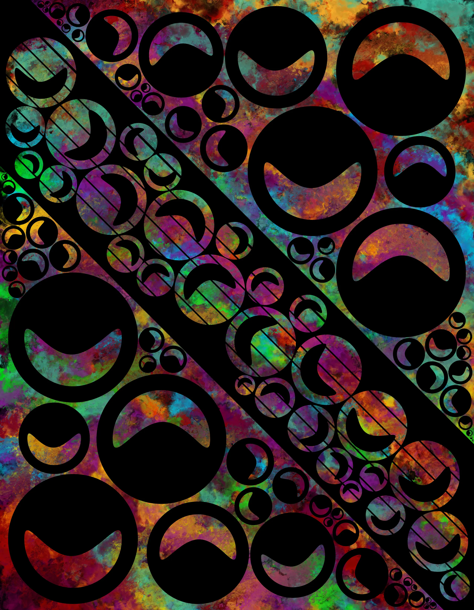

Color arrives before language.
This is my archive.
Take it in with your eyes first—before explanations.
Start with “Formed”, and trace back to “Color” when needed.
Works
Latest selection (click for Formed / Color)